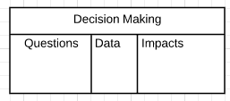
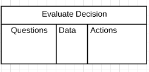

Meeting Notes for 'From Dirty to Decisive: Using Clean Data to Your Advantage'
- Solution for Making Decision based on Large Set of Data
Solution for Making Decision based on Large Set of Data
How Data Impacts Decision
Two Kinds of People in Decision Making Process
-
Liability: people who know materials well, but not involved in decision making process -
Assets: people who can access materials and impact on decision making process
Ignore Data Scraps and Less Hunting
Need clear actions: Less Time Hunting Data, More Time Getting Actions
The Decision Making Modal
Stream Line
Decision
A choice or determination made after considering a set of presented materials
Supported Materials
-
Road Mapbefore decision -
Guidancefor decision
Modals
Informed-ness-
Timeless: decision-desired actions (time for taking action) => Risk Impact Analysis -
Completeness: degree that I am confident in my decision -
Preparation of Direct Action: streaming triggered actions -
Optimality of Outcome: degree to which decision gets best result. This is the environment for best decision
The Decision Making Process
Step 1: Decision-Driven Decision Making
Always start from decision
What do we want to achieve?
-
What DATA can I access? -
Problem-Solve-Targeted: We want to have our data available to subscribers.
Step 2: Find answers to questions
- Know questions
before see the data - i.e. What will answer my questions?
- Draw three panels: 
Step 3: Clean it up
Process in place before cleaning
Goal: Get to decision point
- Build Process
- Make data run under this process
- Example: Get Excel File => Data Visualization => Find Rules to Clean File =>Get Cleaned File
How to clean data?
-
Capture: what bring attention? => Based on rules (error) -
Clarify: what it mean in context (process) => looking for data connector points/common points -
Organize: data with highest priority first -
Reflect: review data frequently => Ask client questions. Note context may change -
Engage: implementation with data
Step 4: Present
Target to the right stakeholder, right time, right way
Remember different people use data differently, so when present data to clients, remember to use data that client only cares.
Step 5: Distribute the insights
Apply insights to decision making process: Turn Data into Action
Three Panels for Evaluating Action

Examples and Conclusions
data.geogria.gov
Composition of Data
- Based on decision I want to make
- Bring historical data in
- Ask questions: what cause the gap? What's the impact of gap?
Tools Recommendation
-
CSVs OpenRefineSQLDKAN-
Data Integration List: share with client/standard for clean data. Example: null data? misspelling? - Majority of time spending on clean data => put this in SOW! show price in SOW!
Comments
Comments powered by Disqus